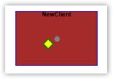

The port shapes can be customized by specifying the property values under the PortStyle property.
Property:
|
Property |
Description |
Type of the property |
Value it accepts |
Any other dependencies/ sub properties associated |
|
PortStyle |
The PortStyle property provides option for the customization of the ports. |
CLR Property |
PortStyle |
No |
The various properties under the PortStyle property are,
· Fill - Specifies the color to be used to fill the port.
· StrokeThickness - Specifies the thickness value for the port's border.
· Stroke - Specifies the color to be used for the border of the port.
· StrokeStartLineCap - Specifies the shape used at the start of a line or segment.
· StrokeEndLineCap - Specifies the shape at the end of a line or segment.
· StrokeLineJoin - Specifies the shape that joins two lines or segments.
The following code shows the setting of some of these properties:
|
[C#]
Node NewClient = new Node(Guid.NewGuid(), "NewClient"); NewClient.Shape = Shapes.Rectangle; NewClient.Level = 0; NewClient.Width = 150; NewClient.Height = 100; NewClient.OffsetX = 40; NewClient.OffsetY = 100; NewClient.Label = "NewClient"; NewClient.NodePathFill = new SolidColorBrush(Colors.Brown); NewClient.Level = 0; diagramControl1.Model.Nodes.Add(NewClient);
ConnectionPort port = new ConnectionPort(NewClient); port.Left = 50; port.Top = 50; port.Node = NewClient; port.Height = 20; port.Width = 20; port.PortShape = PortShapes.Diamond; port.PortStyle.Fill = new SolidColorBrush(Colors.Yellow); port.PortStyle.Stroke = new SolidColorBrush(Colors.Green); NewClient.Ports.Add(port);
|
|
[VB]
Dim NewClient As New Node(Guid.NewGuid(), "NewClient") NewClient.Shape = Shapes.Rectangle NewClient.Level = 0 NewClient.Width = 150 NewClient.Height = 100 NewClient.OffsetX = 40 NewClient.OffsetY = 100 NewClient.Label = "NewClient" NewClient.NodePathFill = New SolidColorBrush(Colors.Brown) NewClient.Level = 0 diagramControl1.Model.Nodes.Add(NewClient)
Dim port As New ConnectionPort(NewClient) port.Left = 50 port.Top = 50 port.Node = NewClient port.Height = 20 port.Width = 20 port.PortShape = PortShapes.Diamond port.PortStyle.Fill = New SolidColorBrush(Colors.Yellow) port.PortStyle.Stroke = New SolidColorBrush(Colors.Green) NewClient.Ports.Add(port) |

Figure 75: Port Styles